---
layout: default
title: Last-mile delay survey / 2018-03-01 / AS40788
---
AS40788, START-, CA
Summary
- Daily last-mile fluctuations: low
- Number of probes: 11
- APNIC eyeball rank: 1149
- Daily fluctuations: True
- Main frequency: 0.0417
- Average peak-to-peak amplitude: 0.95ms
Aggregated last-mile queuing delay

Periodogram
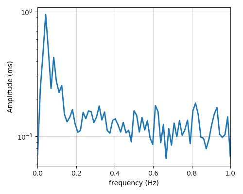
24H profile
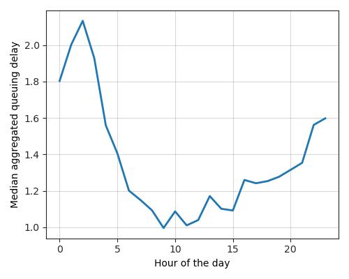
Probes' last-mile RTT
- 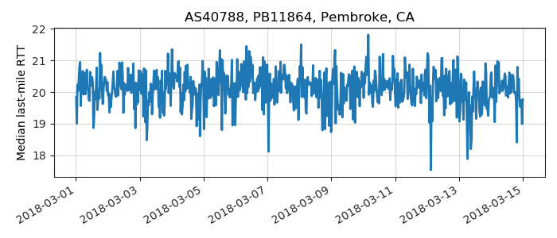
- 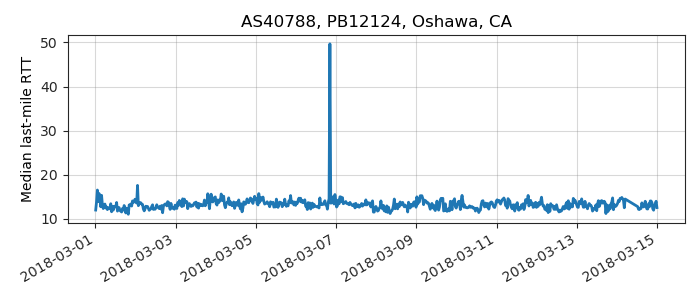
- 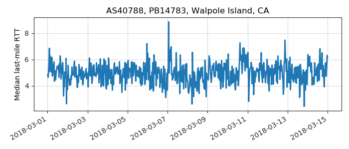
- 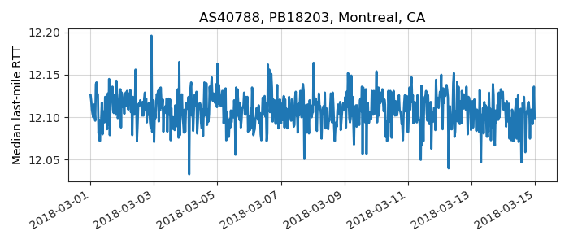
- 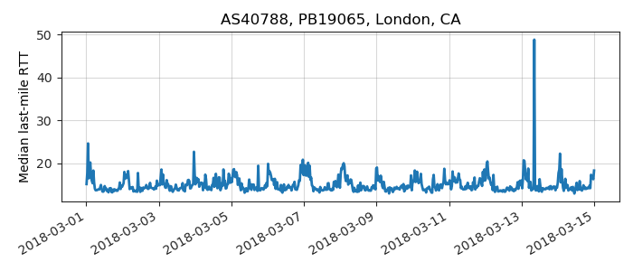
- 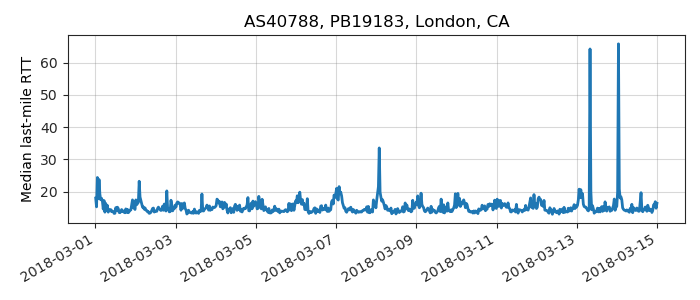
- 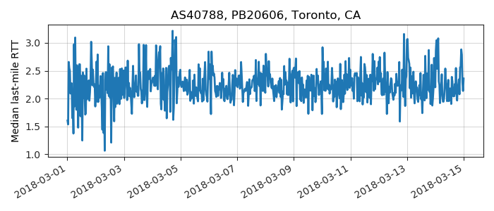
- 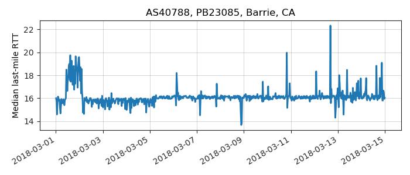
- 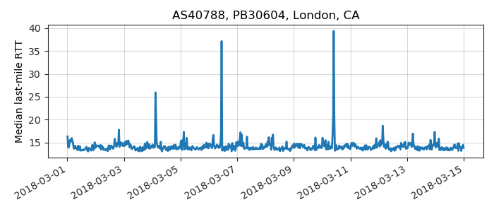
- 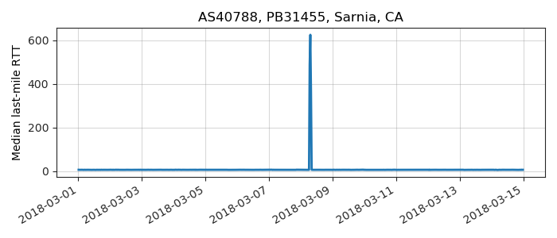
- 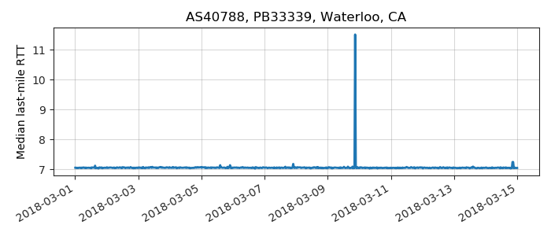